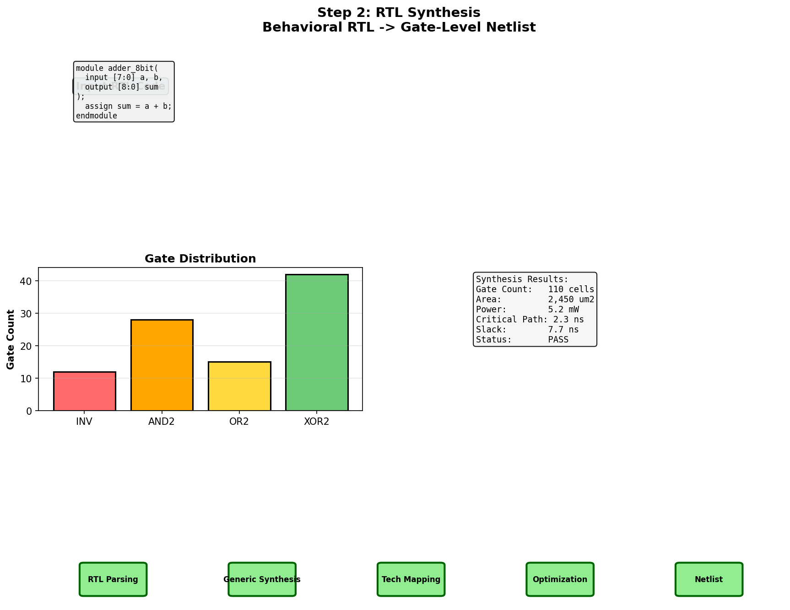
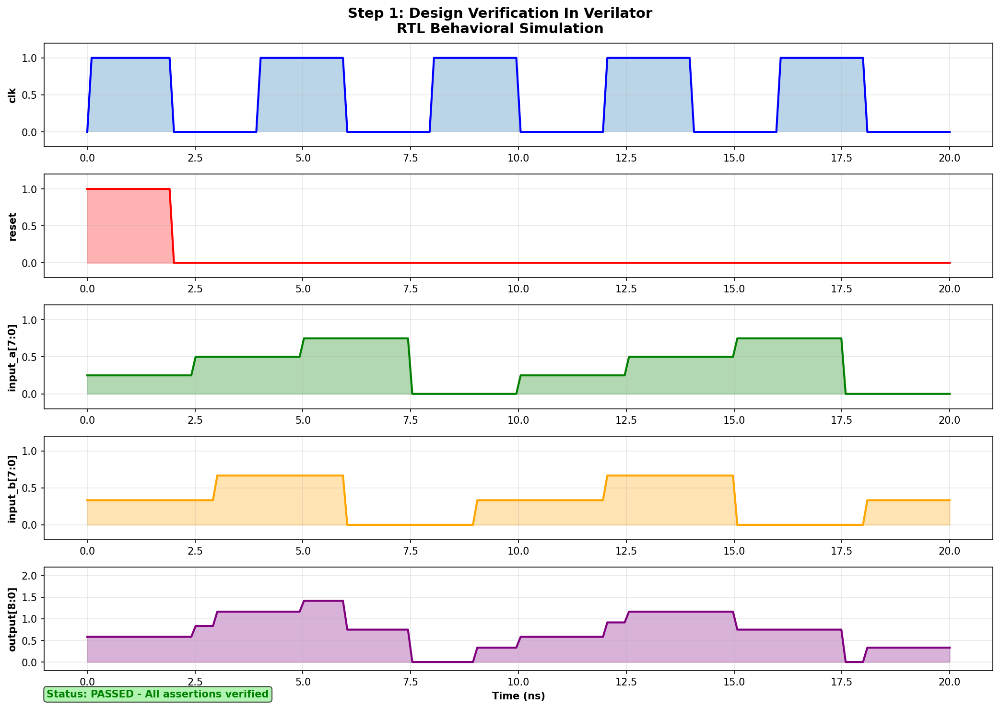
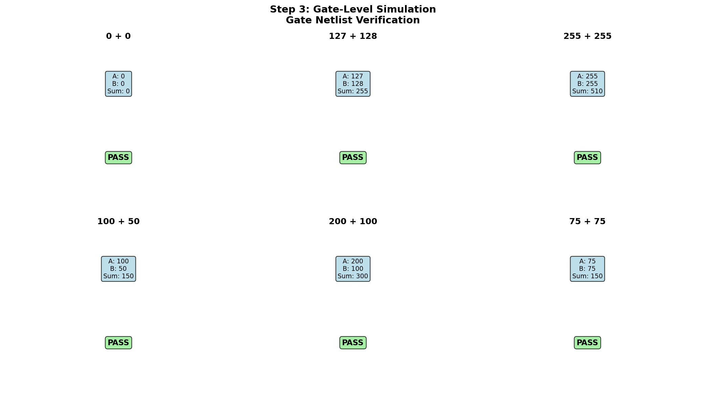
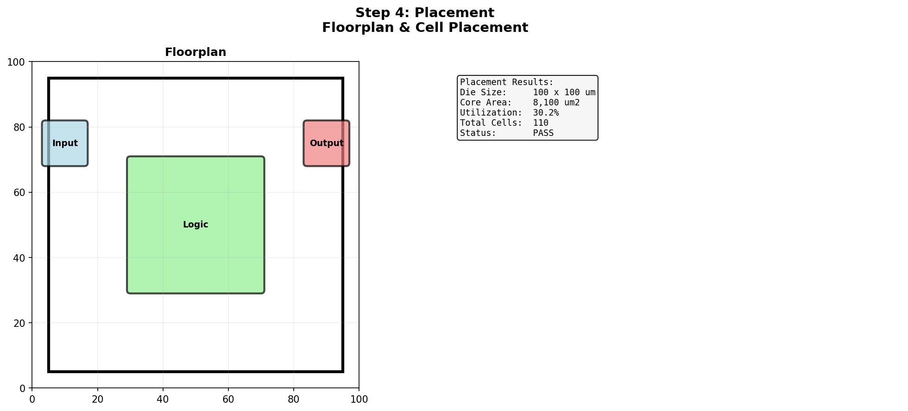
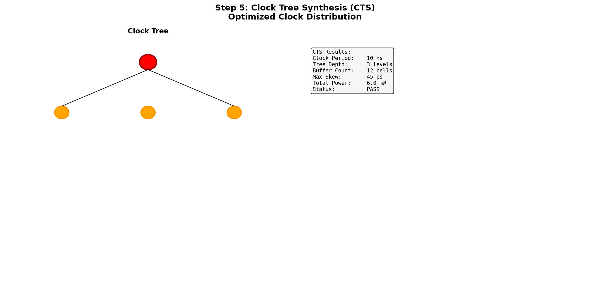
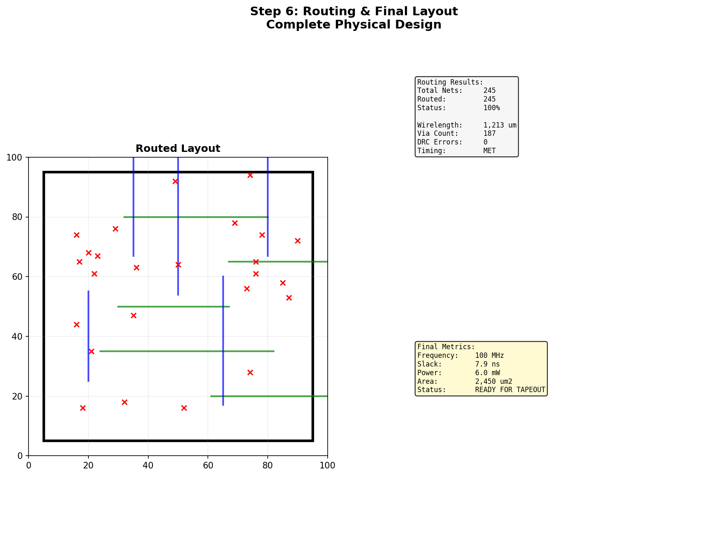

Step 2: RTL Synthesis
Convert behavioral Verilog to gate-level netlist using Yosys/Cadence Genus with SKY130 standard cells.

From RTL Simulation to Silicon Layout - 6 Essential Steps
RTL behavioral simulation verifies the design before synthesis. Waveforms show clock, reset, inputs, and outputs over 20ns.

Convert behavioral Verilog to gate-level netlist using Yosys/Cadence Genus with SKY130 standard cells.

Verify the synthesized netlist behaves identically to RTL. All test vectors must pass with 100% coverage.

Determine positions of all cells on silicon die. Optimize for timing, power, and area utilization.

Create optimized clock distribution network to reach all flip-flops with minimal skew and balanced latency.

Route all signals using metal layers. Complete all design rules and prepare for silicon fabrication (tapeout).
